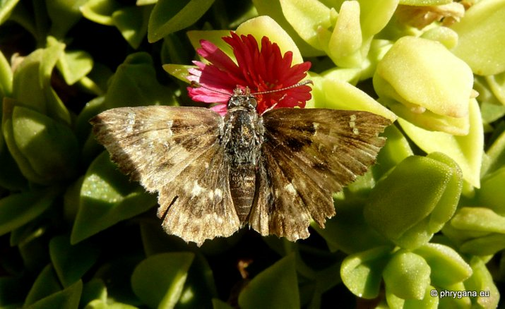

| PHRYGANA | Fauna | Flora | Galles | liste des espèces |
contact -
info - commentaires phrygana1 (at) gmail.com |
| Particularités crétoises | nouveautés | Mines | ressources naturelles |
| Pyrgus armoricanus (Oberthur 1910) |
| 401 | Fauna | HESPERIIDAE | Pyrginae | Pyrgus Hubner 1819 |
|
 Pyrgus armoricanus Agios Giorgos (Melambes) 16 octobre 2011 |
| l'Hespérie des potentilles -- Obethür's Grizzled Skipper -- Zweibüttriger Wurfel-Dickkopffalter -- Bretons Spikkeldikkopje -- Ajedrezada yunque |
| Adulte: envergure de 24 à 26 mm; couleur de fond brun foncé avec des taches blanches; revers avec une couleur brun clair rougeâte, avec une tache blanche centrale; |
| Chenille trouvée entre fin avril et octobre. Oeufs petits, jaune verdâtre, ovoïdes-tronqués; chenilles brun terne à brun grisâtre, parfois brun rougeâtre, poilues (à poils courts) |
| La chenille est oligophage: diverses Rosaceae (Potentilla sp., Fragaria sp., Rubus), Cistaceae (Helianthemum sp.) |
| Espèce trivoltine: avec des périodes de vol en février mars avril mai juin septembre octobre. |
| Statut en Crète: indigène |
| Biotopes en Crète: phrygana, pelouses sèches, bords des chemins, |
| Altitudes: 0 - 1000 (- 1500) m. |
| Distribution: Europe centrale et méridionale, Afrique du Nord, Turquie, Moyen-Orient |
| 07 septembre 2012 |
| © paul fontaine -- © Phrygana.eu 2007 -- 2013 |